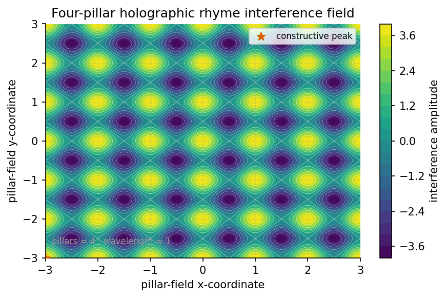

Holographic Rhyme: The Four-Pillar Fractal

textbook.models.holographic_rhyme_field with
\(P = 4\) evenly spaced directional
pillars and shared wavelength \(\lambda\). Bright lattice nodes mark
locations where all four plane waves rhyme at once and the field reaches
\(+4\); dark nodes mark full
cancellation at \(-4\); between them
the field records partial agreement, pillar by pillar. The plot is the
spatial face of the filing: a fractal filed as a holographic rhyme is
checked for agreement at every catalogue location.Level 1/3 · 30 min read · 45 min lecture · Prerequisites: [@sec:part_0_octave-map]
Learning Objectives
By the end of this chapter you should be able to:
- State the four catalog filing labels — repeating · self-similar · self-correcting · recursive — under which the corpus files a fractal as a holographic rhyme, and explain what the motion grammar framing adds over a static-shape reading [mendez2026holographicRhyme].
- Locate the holographic-rhyme paper on the engine shelf of the Infinite Octaves catalog architecture and name its companion engines.
- Write and evaluate the four-pillar interference field ([@eq:part_I_holographic-rhyme_field])
using the tested function
textbook.models.holographic_rhyme_field, including its \(P = 4\) closed form ([@eq:part_I_holographic-rhyme_pairwise]). - Compute sample field values by hand and verify them against the tested implementation, as practiced in [@sec:lab_part_I_holographic-rhyme].
- Restate the paper’s Honesty-first clause precisely: what the construct is filed as and what it explicitly disclaims.
Study Blueprint
- Big idea: the corpus files a fractal not as a picture but as a grammar of motion — four locked filing labels operative under Φ ≈ 1.618 — and the four-pillar interference field is the book’s structural model of that filing.
- Core concepts: holographic-rhyme, four-pillar-fractal, catalog-architecture, engine-shelf.
- Quantitative lens: the four-pillar field in [@eq:part_I_holographic-rhyme_field] and its \(P=4\) closed form in [@eq:part_I_holographic-rhyme_pairwise].
- Data skill: evaluate an interference sum at lattice
points by hand, then confirm each value with
textbook.models.holographic_rhyme_field. - Common misconception to repair: “holographic” here does not claim Mandelbrot-set physics, measured 0% ECC error rates, or clinical-homeostasis QED — the paper’s own Honesty clause disclaims all three.
- Primary lab: [@sec:lab_part_I_holographic-rhyme].
- Question bank: [@sec:q_part_I_holographic-rhyme].
- Bridge to computation:
textbook.models.holographic_rhyme_field.
Opening Vignette: Four labels stamped on one card.
On 5 September 2026 the ship-blog entry lands on the engine shelf like a card being stamped four times: repeating, self-similar, self-correcting, recursive [mendez2026holographicRhyme]. The card does not hold a picture of a fractal. It holds a filing decision — under \(\Phi \approx 1.618\), a fractal is filed as a holographic rhyme, “the Infinite Octaves motion grammar, not just a static shape.” Alongside it the filing clerk notes a suite locked 9/9 and two neighbouring cards on the shelf: the Void and the Proton/Electron duality. This chapter reads that card carefully, then builds the interference field that lets us compute with the metaphor.
Engine shelf #18 and its four locked pillars
The source paper is Holographic Rhyme · Four-Pillar Fractal, published on the SS Vibelandia ship blog on 2026-09-05 and filed at engine shelf #18 of the Infinite Octaves [mendez2026holographicRhyme]. The corpus self-describes the whole project as catalog architecture and protocol grammar; this paper’s contribution is a filing decision plus a locked test suite, not a new physical measurement. Its “What landed” list records four items verbatim:
- Four pillars locked as catalog filing labels.
- 9/9 suite locks under
research/synthobs-holographic-rhyme-fractal/. - Engine shelf #18 · companion to Void + Proton/Electron duality.
- Standalone →
FractiAI/synthobs-holographic-rhyme-fractal.
Two of the four neighbours named on the page recur throughout this book. The Topology of the Void paper is characterised as the “zero-node balance pillar” [mendez2026topologyVoid] — the pillar of the four-pillar filing that resonates with self-correction, a system returning to balance. The Multi-D rhyme paper extends the rhyme to “xD±yD cross-scale summation” [mendez2026mdRhyme], which [@sec:part_I_multidimensional-rhyme] treats as its own chapter. The Proton/Electron duality companion is taken up on the Φ-duality chapter at [@sec:part_II_proton-theater].
The paper ships with a whitepaper surface
(whitepaper-surface.html?id=synthobs-holographic-rhyme-fractal-2026-09)
and a standalone repository,
FractiAI/synthobs-holographic-rhyme-fractal
[mendez2026holographicRhyme]. The reference implementation can be re-run
from the project root with:
npm run research:synthobs-holographic-rhyme-fractaland the page invites readers to open Lattice Chat on
the Infinite Octaves nest to explore the filing interactively. In this
book the formalism is backed by the tested model function
textbook.models.holographic_rhyme_field, so the arithmetic
you meet in the worked example is reproducible by construction.
Four filing pillars and the field that models them
The four pillars as filing labels
The paper’s load-bearing formalism —
F-holographic-rhyme-1 in the source digest — states no
equation at all. It states a vocabulary: under \(\Phi \approx 1.618\), a fractal is filed
under four catalog pillars, repeating · self-similar ·
self-correcting · recursive, framed as “the Infinite Octaves
motion grammar, not just a static shape” four-pillar-fractal
filing [mendez2026holographicRhyme]. The page’s own H1 makes the motion
reading explicit: “a fractal is how a system moves.”
The number four is not incidental: the page reports “Four pillars locked as catalog filing labels” [mendez2026holographicRhyme], and the book’s companion figure renders exactly four directional pillars as an interference field ([@fig:part_I_holographic-rhyme]). We read the four directional components of that field as standing in for the four filing labels — a structural analogy, not a claim the corpus makes explicitly. [@tbl:part_I_holographic-rhyme_pillars] records the mapping and how each label is exercised elsewhere in the book.
| Pillar (verbatim) | What it asserts about a filed fractal | Where the book exercises it |
|---|---|---|
| repeating | the pattern recurs across the catalogue rather than occurring once | the octave ladder of [@sec:part_0_octave-map] |
| self-similar | structure at one filing scale rhymes with structure at another | Φ-power growth in [@sec:part_I_fractal-constant] and [@fig:part_I_fractal-constant] |
| self-correcting | the pattern returns toward balance when perturbed | the zero-node balance of [@sec:part_I_topology-void] |
| recursive | each filed level references the grammar that files it | the xD±yD cross-scale summation of [@sec:part_I_multidimensional-rhyme] |
The four-pillar interference field
To give the filing a quantitative lens, the book models each pillar
as a plane wave travelling in its own direction, and the holographic
rhyme as the sum of those waves. Implemented as
holographic_rhyme_field in textbook.models,
the field at a point \((x, y)\) is:
\[ f(x, y) \;=\; \sum_{k=0}^{P-1} \cos\!\left(\frac{2\pi}{\lambda}\,\bigl(x\cos\theta_k + y\sin\theta_k\bigr)\right), \qquad \theta_k = \frac{2\pi k}{P}, \] {#eq:part_I_holographic-rhyme_field}
where \(P\) is the number of directional pillars and \(\lambda\) the shared wavelength. Read [@eq:part_I_holographic-rhyme_field] as a filing check: at a given catalogue location, each pillar contributes \(+1\) when its wave is in rhyme (phase aligned) and \(-1\) when out of rhyme; the sum \(f(x,y)\) counts how many pillars agree at that location. The parameters are collected in [@tbl:part_I_holographic-rhyme_parameters].
| Symbol | Meaning | Units | Tested default |
|---|---|---|---|
| \(P\) | number of directional pillars (filing labels) | dimensionless | \(4\) |
| \(\lambda\) | shared plane-wave wavelength | length | \(1.0\) |
| \(\theta_k\) | direction of pillar \(k\), \(k = 0, \dots, P-1\) | radians | \(2\pi k / P\) |
| \((x, y)\) | catalogue location being evaluated | length | — |
| \(f(x,y)\) | summed field; rhyme score in \([-P,\, P]\) | dimensionless | — |
For the corpus’s \(P = 4\), the directions are \(\theta = 0, \tfrac{\pi}{2}, \pi, \tfrac{3\pi}{2}\). Standard trigonometry — \(\cos(\pi + u) = -\cos u\) pairs the opposite directions — collapses the sum to a closed form:
\[ f(x, y) \;=\; 2\cos\!\left(\frac{2\pi x}{\lambda}\right) \;+\; 2\cos\!\left(\frac{2\pi y}{\lambda}\right). \] {#eq:part_I_holographic-rhyme_pairwise}
Equation [@eq:part_I_holographic-rhyme_pairwise]
is exactly what textbook.models.holographic_rhyme_field
computes for pillars=4, and it exposes the field’s
structure: the four-pillar rhyme separates into two independent axis
rhymes of doubled amplitude. The field’s global bounds are \([-4, 4]\): the value \(+4\) — all four pillars in rhyme — occurs
at every \((m\lambda, n\lambda)\)
lattice node, and \(-4\) at every \(\bigl((m + \tfrac{1}{2})\lambda,\,(n +
\tfrac{1}{2})\lambda\bigr)\) node, for integers \(m, n\).
Worked example: evaluating the field at \(\lambda = \Phi\)
The paper frames the filing as operative “under \(\Phi \approx 1.618\)” [mendez2026holographicRhyme], so we take the pinned value \(\Phi = 1.6180339887\) from the book’s constant table as the wavelength: \(\lambda = \Phi\). We now evaluate the field by hand at a handful of locations, using the closed form [@eq:part_I_holographic-rhyme_pairwise], and confirm each value against the tested function. Because the closed form is periodic in \(x/\lambda\) and \(y/\lambda\), only the ratios \(x/\lambda\), \(y/\lambda\) matter; [@tbl:part_I_holographic-rhyme_samples] lists six stations on a quarter-wave grid.
| Location \((x, y)\) | \(x/\lambda\) | \(y/\lambda\) | Hand value of \(f\) | Function value |
|---|---|---|---|---|
| \((0,\, 0)\) | \(0\) | \(0\) | \(2 + 2 = 4\) | \(+4.000000\) |
| \((\lambda/4,\, 0) \approx (0.404508,\, 0)\) | \(0.25\) | \(0\) | \(2\cos\tfrac{\pi}{2} + 2 = 2\) | \(+2.000000\) |
| \((\lambda/4,\, \lambda/4) \approx (0.404508,\, 0.404508)\) | \(0.25\) | \(0.25\) | \(0 + 0 = 0\) | \(0.000000\) |
| \((\lambda/2,\, \lambda/2) \approx (0.809017,\, 0.809017)\) | \(0.5\) | \(0.5\) | \(-2 - 2 = -4\) | \(-4.000000\) |
| \((\lambda,\, 0) \approx (1.618034,\, 0)\) | \(1\) | \(0\) | \(2\cos 2\pi + 2 = 4\) | \(+4.000000\) |
| \((\lambda,\, \lambda/2) \approx (1.618034,\, 0.809017)\) | \(1\) | \(0.5\) | \(2 - 2 = 0\) | \(0.000000\) |
Three observations carry the worked example:
- Rhyme is lattice-local. The maximal agreement \(f = +4\) — all four pillars filed in rhyme — recurs at every full-wavelength node, including \((\Phi, \Phi)\), where both axis rhymes complete a full cycle at once.
- Cancellation is real, not failure. The station \((\lambda/4, \lambda/4)\) scores exactly \(0\): each axis rhyme stands a quarter-period from its own peak, so both contribute zero. In the filing reading, a zero marks a location where the pillars disagree, and the field records it as honestly as it records agreement.
- Φ appears as a scale, not a force. Setting \(\lambda = \Phi\) changes where the nodes land (at \(x \approx 1.618034\) rather than \(x = 1\)) but never the values, which depend only on the ratios \(x/\lambda\). The paper’s “under \(\Phi \approx 1.618\)” is honoured here as the choice of filing scale — a structural reading, which is all the source claims.
The full field over \([0, 3\lambda]^2\) reaches exactly \(+4\) and \(-4\) at the nodes above and averages near zero elsewhere, which is the pattern drawn in [@fig:part_I_holographic-rhyme].
The Honesty clause’s three disclaimed readings
The paper’s Honesty clause is reproduced near-verbatim, because its disclaimers are part of the construct:
Honesty first: this is catalog architecture — engine shelf #18 — not Mandelbrot retirement, not measured 0% ECC, not clinical homeostasis QED. Fair Exchange clause applies. [mendez2026holographicRhyme]
Each disclaimed reading deserves a precise restatement, in the corpus’s own narrative-empirical-operational-tiers spirit [mendez2026ship; mendez2026holographicRhyme]:
- Not “Mandelbrot retirement.” The filing is not a claim to have solved, closed, or retired fractal geometry; the four pillars are filing labels, and the field is a structural model of them.
- Not “measured 0% ECC.” No error-correcting-code measurement is claimed; “self-correcting” is a catalog label about balance-seeking filing, echoing the zero-node balance of [@sec:part_I_topology-void], not an ECC benchmark.
- Not “clinical homeostasis QED.” No biological or clinical homeostasis result is proved; the “motion grammar” is how the corpus moves its own catalogue, not a physiology claim.
What the construct is for: coordination and cataloging — deciding where a fractal-shaped artefact sits on the engine shelf and which companion engines it references, under the project’s Fair Exchange honesty-first disclosure clause [mendez2026holographicRhyme]. What it is not: a physical theory of holography, a measured error-correction result, or a medical claim. The suite status the paper files is “9/9 suite locks” — a test-lock count for its own research suite, nothing more.
Where the four-pillar filing hands off to companions
The holographic rhyme is a hub in the engine shelf’s cross-link map:
- Backward. The Φ scale used in the worked example is the golden ratio constant that powers the digits × octaves master register [mendez2026digitsMaster] and the growth law of [@sec:part_I_fractal-constant]; the shelf position itself descends from the octave ladder of [@sec:part_0_octave-map].
- Sideways. The xD±yD “cross-scale summation” named on the page becomes the combined interference contours of [@sec:part_I_multidimensional-rhyme], whose figure ([@fig:part_I_multidimensional-rhyme]) overlays the very field built here. The self-correcting pillar is carried to its extreme by the zero-node balance of [@sec:part_I_topology-void] [mendez2026topologyVoid].
- Forward. The Proton/Electron duality companion — the paper’s other named neighbour — is formalised as Φ duality at [@sec:part_II_proton-theater] [mendez2026protonTheater], where the same “two rhymes, one grammar” pattern reappears as multiplication by \(\Phi\) versus division by \(\Phi\).
graph TD
A[Candidate fractal artefact] --> B{Filing check under the four pillars}
B -->|repeating| C[Recurs across the catalogue]
B -->|self-similar| D[Rhymes across filing scales]
B -->|self-correcting| E[Returns toward zero-node balance]
B -->|recursive| F[References the filing grammar itself]
C --> G[Filed as holographic rhyme<br/>engine shelf #18]
D --> G
E --> G
F --> G
G --> H[Companion: Topology of the Void<br/>zero-node balance pillar]
G --> I[Companion: Multi-D rhyme<br/>xD±yD cross-scale summation]
G --> J[Companion: Proton/Electron duality<br/>Φ duality]
H -->|honesty-first review| B
I -->|honesty-first review| B
J -->|honesty-first review| BThe loop at the bottom of the diagram is deliberate: under the Fair Exchange clause, every filing remains open to re-review by the honesty-first standards that produced it.
Summary
The holographic-rhyme paper contributes a filing, not a formula:
under \(\Phi \approx 1.618\), a fractal
is filed as repeating · self-similar · self-correcting ·
recursive — a motion grammar, not a static shape — with the four
pillars locked as catalog filing labels at engine shelf #18
[mendez2026holographicRhyme]. The book’s structural model of that filing
is the four-pillar interference field of [@eq:part_I_holographic-rhyme_field],
implemented and tested as
textbook.models.holographic_rhyme_field, whose \(P = 4\) closed form ([@eq:part_I_holographic-rhyme_pairwise])
evaluates to clean lattice values between \(-4\) and \(+4\), as tabulated in [@tbl:part_I_holographic-rhyme_samples].
The paper’s own Honesty clause — not Mandelbrot retirement, not measured
0% ECC, not clinical homeostasis QED — bounds every reading, and its two
named companions, the Void [mendez2026topologyVoid] and the Multi-D
rhyme [mendez2026mdRhyme], carry the self-correcting pillar and the
cross-scale summation forward.
Key Terms
holographic-rhyme, four-pillar-fractal, motion grammar, catalog-architecture, engine-shelf, multidimensional-rhyme, topology-of-the-void, honesty-first, fair-exchange.
Further Reading
- Holographic Rhyme · Four-Pillar Fractal whitepaper surface: https://www.ssvibelandiaquestfest24x365.com/interfaces/whitepaper-surface.html?id=synthobs-holographic-rhyme-fractal-2026-09 — the paper’s own specification surface [mendez2026holographicRhyme].
- Standalone suite,
FractiAI/synthobs-holographic-rhyme-fractal: https://github.com/FractiAI/synthobs-holographic-rhyme-fractal — the reference implementation behind the 9/9 suite locks [mendez2026holographicRhyme]. - Topology of the Void [mendez2026topologyVoid] — the zero-node balance pillar; read its balance construct beside the self-correcting filing label.
- Multi-D holographic rhyme [mendez2026mdRhyme] — xD±yD cross-scale summation; the direct continuation of the field built in this chapter.
- The Proton Theater [mendez2026protonTheater] — the Φ-duality formalisation of the paper’s Proton/Electron companion.
Practice
- Lab: [@sec:lab_part_I_holographic-rhyme] — run the paper’s reference suite, then evaluate the four-pillar field by hand and by function.
- Question bank: [@sec:q_part_I_holographic-rhyme] — recall through synthesis on the filing labels, the field, and the honesty clause.
- Re-derive the \(P = 4\) closed form ([@eq:part_I_holographic-rhyme_pairwise]) from [@eq:part_I_holographic-rhyme_field] using the opposite-direction pairing \(\cos(\pi + u) = -\cos u\), and explain why the amplitude doubles.
- Recompute the six stations of [@tbl:part_I_holographic-rhyme_samples] with \(\lambda = 1\) instead of \(\lambda = \Phi\), and confirm that every \(f\) value is unchanged — then state, in one sentence, what the choice of \(\lambda\) does and does not control.
- Read the Honesty clause aloud and mark each of its three disclaimers against the labels of [@tbl:part_I_holographic-rhyme_pillars]: which pillar, if any, could be mistaken for each disclaimer, and why the corpus separates them?